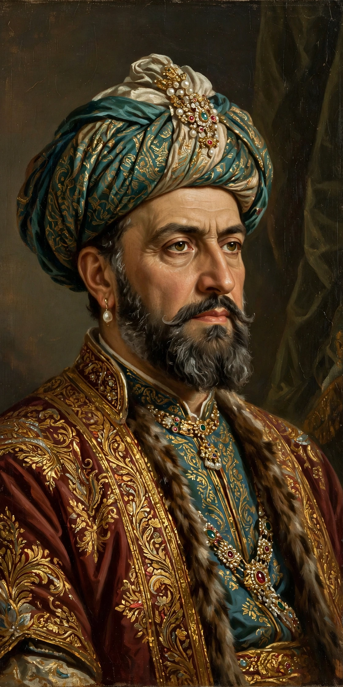

Aga Khan I
From Wikipedia, the free encyclopedia
| Aga Khan I Hasan Ali Shah | |
|---|---|
| Born | 1804, Kahak, Persia |
| Died | April 1881, Bombay, British India |
| Title | 46th Imam of the Nizari Ismailis |
| Reign | 1817–1881 |
| Successor | Aga Khan II |
Aga Khan I, born Hasan Ali Shah (Persian: حسن علی شاه; 1804 – April 1881), was the 46th Imam of the Nizari Ismaili Muslims and the first to bear the title Aga Khan, granted by the Qajar shah of Persia.
Life
Hasan Ali Shah succeeded his father as Imam in 1817 while still a youth. He served as governor of Kerman under Fath-Ali Shah Qajar, who bestowed the honorific "Aga Khan" ("great lord") upon him and gave him his daughter in marriage. After disputes with the Qajar court, he rebelled, fled Persia in 1841, and eventually settled in Bombay, British India.

Hasan Ali Shah, Aga Khan ILeadership of the Ismailis
From Bombay, Aga Khan I reorganised the Nizari Ismaili community, strengthening its institutions across India, East Africa, Central Asia and the Middle East. He encouraged education, trade and communal self-organisation among his followers. He died in Bombay in 1881 and was succeeded by his son Aqa Ali Shah, Aga Khan II.
Legacy
He is remembered as the founder of the modern Aga Khan lineage, whose descendants — notably Aga Khan III and Aga Khan IV — became prominent global philanthropists through the Aga Khan Development Network.